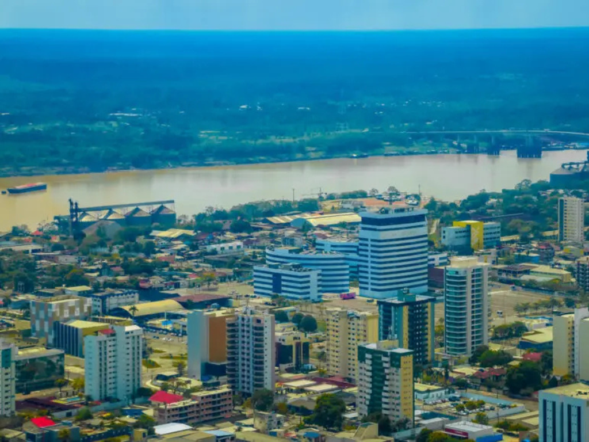

O Rondônia está localizado na região Norte do Brasil e destaca-se por sua importância econômica e pela forte presença da Floresta Amazônica em seu território. O estado possui grande diversidade natural, com rios, áreas de preservação e rica biodiversidade. Sua capital, Porto Velho, é um importante centro urbano e econômico da região. A economia rondoniense baseia-se principalmente na agropecuária, na agricultura, no comércio e na geração de energia hidrelétrica, com destaque para as usinas instaladas no Rio Madeira. Além disso, Rondônia apresenta uma cultura marcada pela influência de migrantes de diversas regiões do país, o que contribui para a diversidade cultural do estado.

Voltar